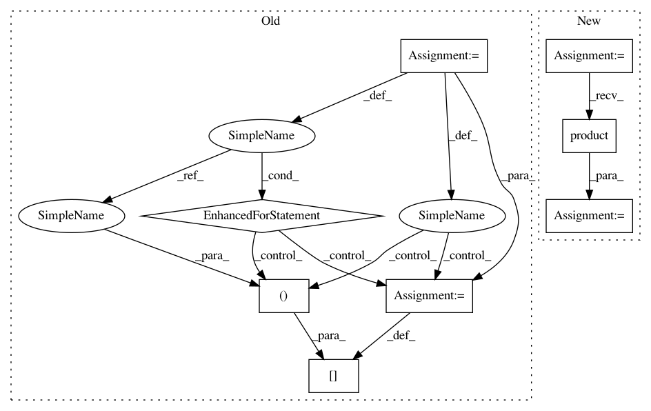

5ce91f1cc0d3dcdb8b53c47990774173b82eff62,scipy/sparse/dok.py,dok_matrix,__add__,#dok_matrix#Any#,292
Before Change
new = dok_matrix(self.shape, dtype=res_dtype)
// Add this scalar to every element.
M, N = self.shape
for i in xrange(M):
for j in xrange(N):
aij = self.get((i, j), 0) + other
if aij != 0:
new[i, j] = aij
// new.dtype.char = self.dtype.char
elif isinstance(other, dok_matrix):
if other.shape != self.shape:
raise ValueError("matrix dimensions are not equal")
// We could alternatively set the dimensions to the largest of
After Change
new = dok_matrix(self.shape, dtype=res_dtype)
// Add this scalar to every element.
M, N = self.shape
for key in itertools.product(xrange(M), xrange(N)):
aij = dict.get(self, (key), 0) + other
if aij:
new[key] = aij
// new.dtype.char = self.dtype.char
elif isspmatrix_dok(other):
if other.shape != self.shape:
raise ValueError("Matrix dimensions are not equal.")
// We could alternatively set the dimensions to the largest of
In pattern: SUPERPATTERN
Frequency: 3
Non-data size: 8
Instances
Project Name: scipy/scipy
Commit Name: 5ce91f1cc0d3dcdb8b53c47990774173b82eff62
Time: 2017-08-12
Author: akstrfn@gmail.com
File Name: scipy/sparse/dok.py
Class Name: dok_matrix
Method Name: __add__
Project Name: ysig/GraKeL
Commit Name: 6972f0a09dcd30b6eff5057430a612248f417f47
Time: 2018-01-10
Author: y.siglidis@gmail.com
File Name: grakel/graph_kernels.py
Class Name: GraphKernel
Method Name: calculate_kernel_matrix
Project Name: scipy/scipy
Commit Name: 5ce91f1cc0d3dcdb8b53c47990774173b82eff62
Time: 2017-08-12
Author: akstrfn@gmail.com
File Name: scipy/sparse/dok.py
Class Name: dok_matrix
Method Name: __radd__